| 日付 | 2007年8月10日（金） - 2007年8月12日（日） | ||||||
|---|---|---|---|---|---|---|---|
| 山域 | 北アルプス | ||||||
| メンバー | 友人（男2） | ||||||
| 山行形態 | 前夜発2泊3日小屋泊 | ||||||
| アクセス | 電車、ロープウェイ | ||||||
| ルート (Map) |
|
3日目
5:01 白馬山荘から日の出を拝む。
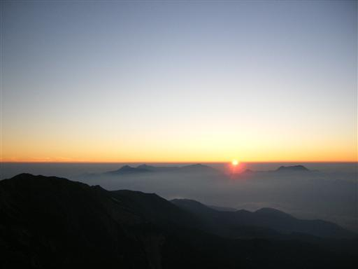
昨日歩いた杓子岳と白馬鑓ヶ岳が赤く染まっている。
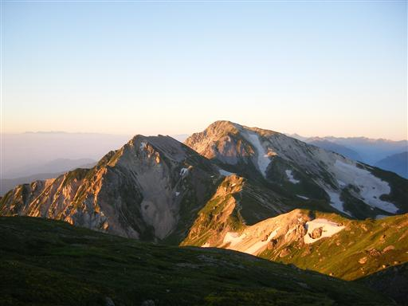
遠くには雲海に浮かぶ剱岳も見える。
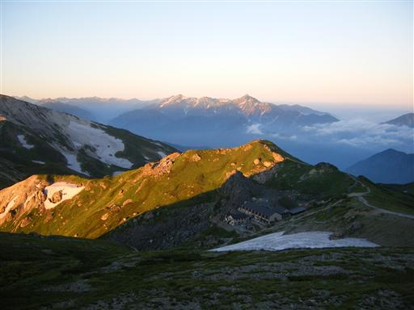
5:14 白馬山荘出発。
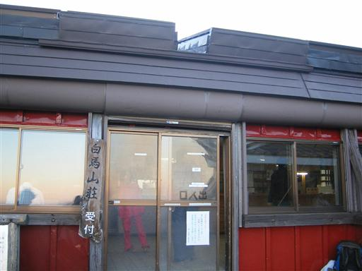
山荘の前には朝食前に景色を楽しむ人が大勢いた。
小屋食は時間に不自由なのが玉に瑕。
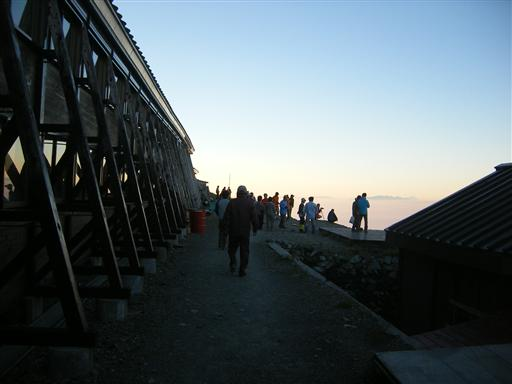
左手に見える八ヶ岳連峰のすぐ右に、薄ら富士山が見える。
右手に見えるのは南アルプスの山々。
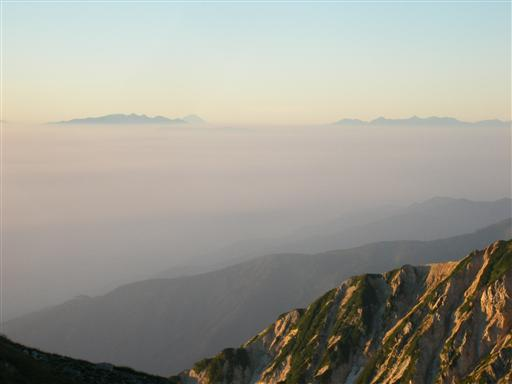
朝日を浴びる白馬岳に向かって歩き始める。
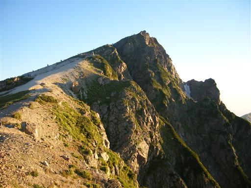
5:42 久しぶりの白馬岳山頂到着。標高2932m。
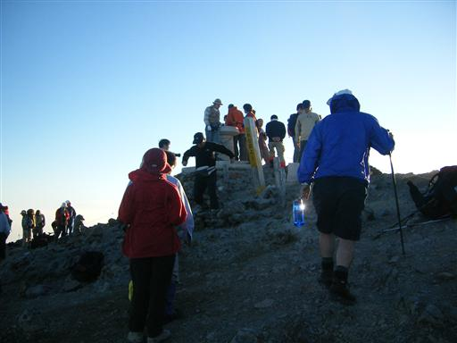
山頂からは立山、剱岳の他、遠くには槍や穂高まで見える。
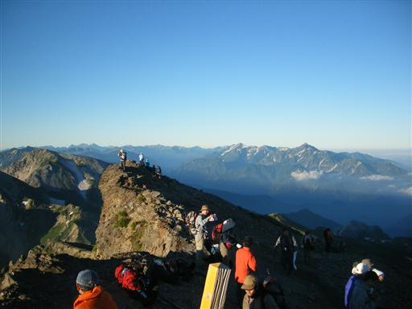
混雑する山頂を脱出する。
山頂からはゆったりとした道が続く。
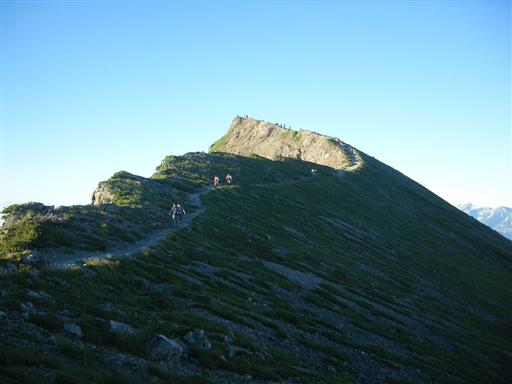
白馬岳の隣にある小蓮華山を目指す。
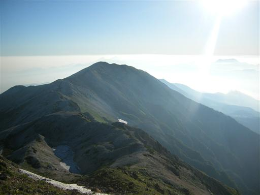
北側には伸びやかな雪倉岳が望める。
そちらに向かう登山者もちらほらいる。
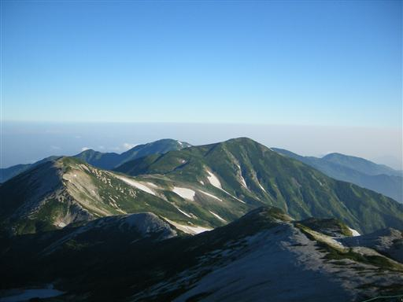
登山道から白馬三山を望む。
東面の荒々しい岩壁がよく見える。
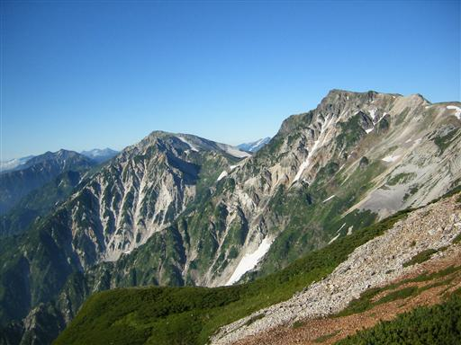
7:23 小蓮華山山頂到着。標高2769m。
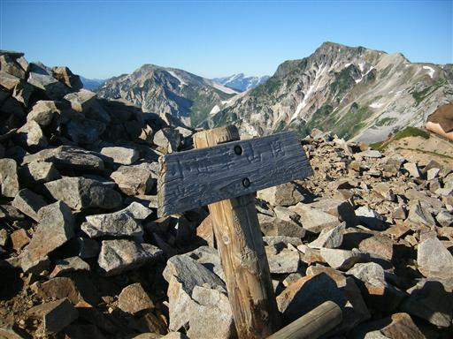
山頂からは大きな白馬大池が見える。
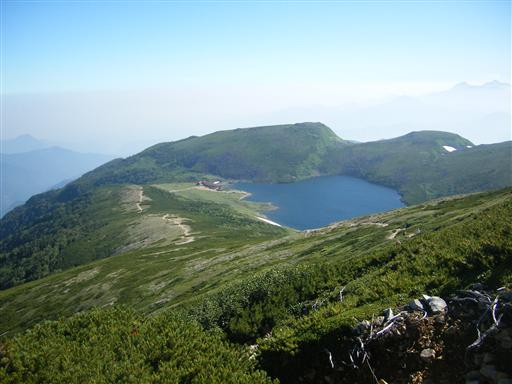
白馬大池のほとりに建つ白馬大池山荘に到着。
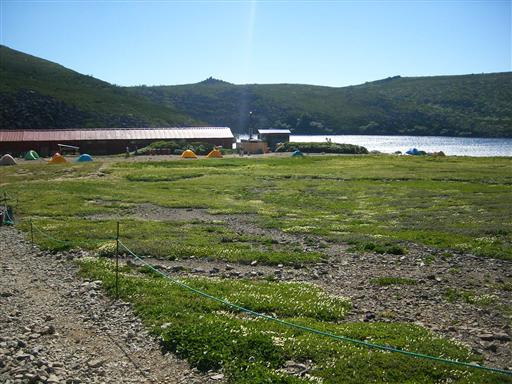
池の周りにはチングルマが咲き乱れている。
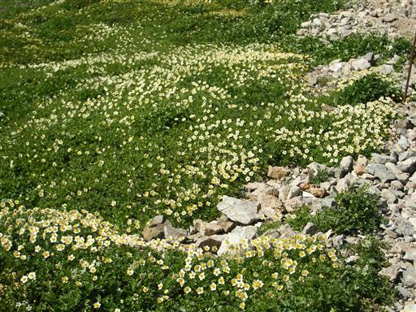
白馬岳から一転して、ゆったりとした景色が広がる。

白馬大池の水は青くて非常にきれい。
風が強いので結構、波がたっている。
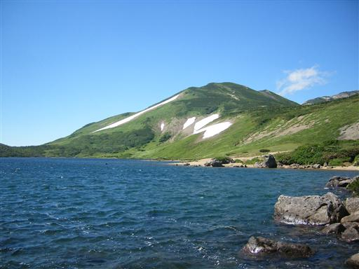
大池からは岩がごろごろした登山道が続く。
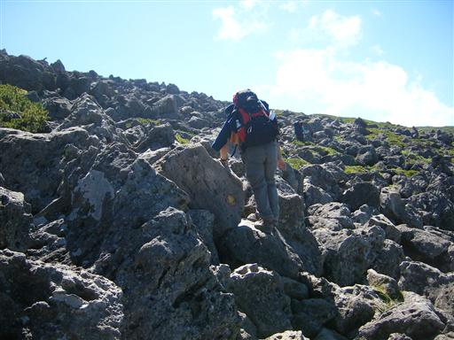
10:17 乗鞍岳山頂到着。標高2437m。
北アルプスの南にある乗鞍岳とは別の山。
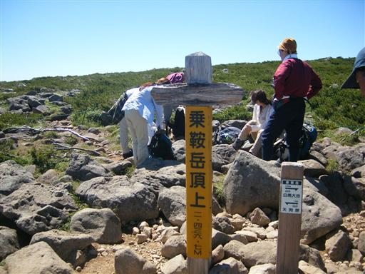
山頂部は非常に広い。
山というより丘という感じ。
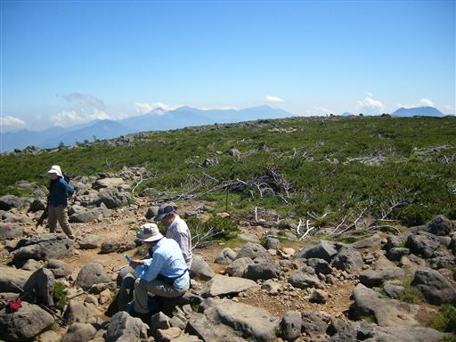
下山道も岩だらけの道が続く。
奥に見えるのは頸城の山々。
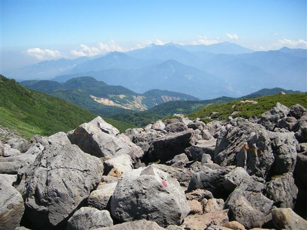
天狗原まで下りてくる。このあたりは湿原があり、木道が設けられている。
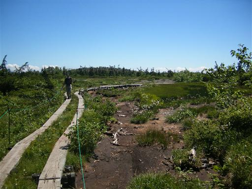
振り返ると、乗鞍岳の裾野が大きく見える。
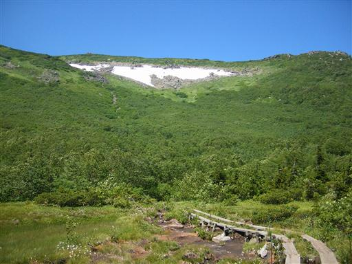
12:06 栂池平到着。標高1850m。
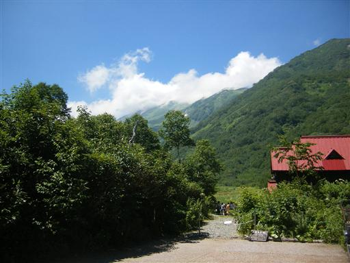
見上げると、白馬三山はすでに雲に覆われている。
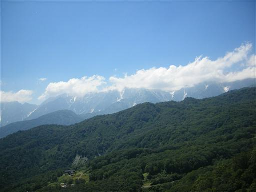
ロープウェイに乗って下山。
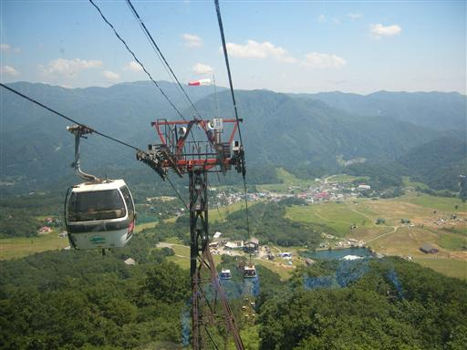